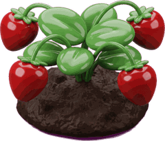

☕ 동물 친구 카페
인사하고, 주문받고, 음료를 준비해 보아요!
손님 맞이🥤 딸기 음료


동물 친구가 찾아왔어요!손님을 맞이해요
국어 · 의사소통수학 · 수량/계산사회 · 예절진로와 직업 · 외식서비스
원하는 활동 단계를 고를 수 있어요.
교사용 활동 기록
이 기록은 현재 브라우저에만 저장됩니다. 학생의 실제 성취 여부는 교사가 관찰해 판단합니다. 이름이나 개인식별정보는 저장하지 않습니다.
옥쌤의 즐거운 교실 · 직업 체험 시범 콘텐츠. 정글 점프 동물·카페 이미지 및 기존 옥쌤 스티커를 활용합니다. 외부 카페 아이콘은 온라인일 때 표시되며, 연결이 없으면 그림 대체 문자를 보여줍니다.